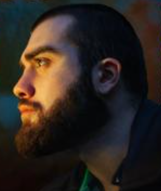

Join the best academy in Georgia, where you will learn programming, graphic design, filmmaking and
programming.Here you will make the best friends, you will have the best mentor in Georgia, Nika Keshelava.
You will unleash your greatest potential and become the best version of yourself. For details,
see other posts and/or write to us


GOA same as goal oriented academi here you learn everything you need to know and everything there is
about programming.firstly you start from python then html and Deepen your knowledge about programming
on online.there are two sides you can choose from one is programming where you learn algorithm code writing and
code types second is Graphic design and film making join in GOA became a chad

here is GOA's facebook page where you can join us:
facebook/GOA
and Nika keshelava's facebook:
Nika keshelava 